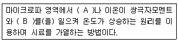
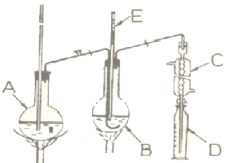
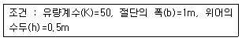
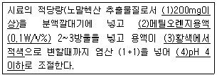
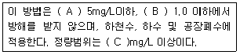

수질환경산업기사 (2009-03-01 기출문제)
1과목: 수질오염개론
1. 우리나라 수자원에 대하여 이용량을 용도별로 나눌 때 그 수요가 가장 높은 것은?
- 생활용수
- 공업용수
- 농업용수
- 하천유지용수
(정답률: 알수없음)

2. 다음 중 동점성(kinematic viscosity)계수와 관계가 가장 먼 것은?
- Poise
- Stoke
- cm2/sec
- μ/ρ (점성계수/밀도)
(정답률: 알수없음)
3. glycine(CH2(NH2)COOH)의 이론적 COD/TOC의 비는? (단, 글리신 최종분해물은 CO2, HNO3, H2O 이다)
- 약 3.2
- 약 3.7
- 약 4.2
- 약 4.7
(정답률: 알수없음)
4. 탈산소계수(K1)가 0.2/day인 하천의 어떤 지점에서 BODu가 20mg/L이었다. 그 지점에서 5일 흐른 후의 잔존 BOD는? (단, 상용대수 적용)
- 2mg/L
- 4mg/L
- 6mg/L
- 8mg/L
(정답률: 알수없음)
5. 적조 발생지역과 가장 거리가 먼 것은?
- 갈수기시 수온, 염분이 급격히 높아진 수역
- 질소, 인 등의 영양염류가 풍부한 수역
- upwelling 현상이 있는 수역
- 정체수역
(정답률: 알수없음)
6. 미생물 세포를 C5H7O2N 이라고 하면 세포 2kg 당의 이론적인 공기소모량은? (단, 완전산화 기준이며 분해 최종산물은 CO2, H2O, NH3, 공기 중 산소는 23%(W/W)로 가정한다.)
- 약 10.2 kg air
- 약 12.3 kg air
- 약 15.4 kg air
- 약 16.1 kg air
(정답률: 알수없음)
7. '회복지대'에 해당되는 하천의 생태변화에 관한 설명으로 알맞지 않은 것은? (단, Whipple의 4지대 기준)
- 질산염의 농도가 증가한다.
- 아질산염의 농도가 증가한다.
- Fungi와 조류가 급격히 줄어든다.
- 세균수가 감소한다.
(정답률: 알수없음)
8. 초기농도가 100mg/L인 오염물질의 반감기가 10 day 라고 할 때 반응속도가 1차반응을 따를 경우 1일 후 농도는?
- 79.3mg/L
- 82.3mg/L
- 88.3mg/L
- 93.3mg/L
(정답률: 알수없음)
9. 해류와 그것을 일으키는 원인이 알맞게 짝지어진 것은?
- 상승류- 바람과 해양 및 육지의 상호작용
- 조류- 해수의 염분, 온도차이에 의해 형성
- 쓰나미- 해수의 밀도차에 의한 해일 작용
- 심해류- 해저의 화산 활동
(정답률: 알수없음)
10. 물의 물리 화학적 특성 중 틀린 것은?
- 물은 고체상태인 경우 수소결합에 의해 육각형 결정구조를 가진다.
- 물(액체)분자는 H+와 OH-의 극성을 형성하므로 다양한 용질에 유효한 용매이다.
- 물은 광합성의 수소 공여체이며 호흡의 최종산물로서 생체의 중요한 대사물이 된다.
- 물은 융해열이 크지 않기 때문에 생명체의 결빙을 방지할 수 있다.
(정답률: 알수없음)
11. 세포합성에 필요한 전구물질과 에너지를 얻기 위해 세포에 의해서 수행되는 화학반응(대사, 생물체가 화학적으로 복잡한 물질을 간단한 물질로 분해하는 과정)은?
- 합성작용(Synthesis)
- 호흡작용(Endogenous Respiration)
- 이화작용(Catabolism)
- 동화작용(Anabolism)
(정답률: 알수없음)
12. 다음 중 수중의 질소순환과정의 질산화 및 탈질의 순서를 옳게 표시한 것은?
- NH3 → NO2- → NO3- → N2
- NO3- → NH3 → NO2- → N2
- NO3- → N2 → NH3 → NO2-
- N2 → NH3 → NO3- → NO2-
(정답률: 알수없음)
13. 친수성 콜로이드의 특성과 가장 거리가 먼 것은?
- 표면장력은 분산매 보다 상당히 작다.
- 에멀젼 상태이다.
- 틴달효과가 적거나 전무하다.
- 점도는 분산매와 큰 차이가 없다.
(정답률: 알수없음)
14. 어떤 폐수의 분석결과 COD 500mg/L 이었고 BOD5가 250mg/L 이었다면 NBDCOD 는? (단, 탈산소계수 K1(밑이 10) = 0.2/day 이다. )
- 122 mg/L
- 172 mg/L
- 222 mg/L
- 272 mg/L
(정답률: 알수없음)
15. BOD 300mg/L를 함유한 공장폐수 400m3/day를 처리하여 하천에 방류하고 있다. 유량이 20,000m3/day이고 BOD 2mg/L인 하천에 방류한 후 곧 완전 혼합된 때의 BOD농도가 3mg/L 이라면 이 공장폐수의 BOD 제거율은 몇 % 인가? (단, 하천의 다른 오염물질 유입은 없다고 가정함)
- 82.3
- 85.6
- 87.2
- 89.6
(정답률: 알수없음)
16. BaCl2 0.3N 500mL를 만드는데 소요되는 BaCl2ㆍ2H2O 량은? (단, BaCl2ㆍ2H2O 분자량은 244.48)
- 13.1g
- 18.3g
- 21.4g
- 23.2g
(정답률: 알수없음)
17. [H+]=5.0×10-4 mol/L 인 용액의 pH는?
- 3.1
- 3.3
- 3.5
- 3.7
(정답률: 알수없음)
18. Morrill 지수에 관한 설명 중 옳은 것은?
- Morrill 지수의 값이 0 일 때 이상적 완전혼합 상태가 된다.
- Morrill 지수의 값이 작을수록 이상적 완전혼합 상태가 된다.
- Morrill 지수가 1에 가까울수록 이상적 plug flow 상태가 된다.
- Morrill 지수란 반응조에 주입된 물감의 90%와 10%의 유입시간의 비를 말한다.
(정답률: 알수없음)
19. 1일 평균 급수량이 50,000m3 이며 시간 최대 급수량에 대한 관내 유속을 0.5m/sec로 할 때 배수관의 직경은? (단, 배수관 직경은 시간 최대 급수량을 기준으로 하며 시간 최대 급수량은 1일 평균 급수량의 2배로 가정)
- 1.23m
- 1.41m
- 1.72m
- 1.94m
(정답률: 알수없음)
20. 유기물 측정지표를 이론적으로 크기가 큰 순서대로 가장 적절히 나타낸 것은?
- ThOD ＞ BODu ＞ CODcr ＞ BOD5 ＞ TOD
- ThOD ＞ CODcr ＞ TOD ＞ BODu ＞ BOD5
- ThOD ＞ TOD ＞ CODcr ＞ BODu ＞ BOD5
- ThOD ＞ CODcr ＞ BODu ＞ TOD ＞ BOD5
(정답률: 알수없음)
2과목: 수질오염방지기술
21. 지름이 15m 인 원형침전조 2 sets를 수심 3m로 각각 설치했다. 각각의 수표면적 부하를 0.8m3/m2ㆍhr로 할 경우 두 개 침전조에서 하루에 처리 가능한 폐수량은?
- 약 5,790m3/d
- 약 6,790m3/d
- 약 7,790m3/d
- 약 8,790m3/d
(정답률: 알수없음)
22. 유량이 15,000m3/day인 공장폐수를 활성슬러지공법으로 처리하고자 한다. 폭기조 유입수의 BOD 및 SS 농도가 각각 250mg/L 이며 BOD 및 SS의 처리효율은 각각 90%, F/M(kgBOD/kgMLSSday) 비는 0.2, 포기시간은 8시간, 반송슬러지의 SS농도는 0.8%인 경우에 슬러지의 반송율은?
- 57%
- 67%
- 76%
- 82%
(정답률: 알수없음)
23. 1차 침전지로 유입되는 생하수는 350mg/L의 SS를 함유하고 유출수는 150mg/L의 SS를 함유한다. 유량이 100,000m3/day라면 1차 침전지에서 제거되는 슬러지의 양은? (단, 1차 슬러지는 5%의 고형물 함유, 슬러지 비중 : 1.0)
- 300m3/day
- 400m3/day
- 500m3/day
- 600m3/day
(정답률: 알수없음)
24. BOD 1kg 제거에 0.9kg의 산소(O2)가 소요된다. 폐수량이 20000m3 이고, BOD농도가 250 mg/L일 때 BOD를 모두를 제거하는데 필요한 전력은? (단, 2kg O2 주입에 1kW의 전력이 소요된다. )
- 3250kW
- 2750kW
- 2250kW
- 1750kW
(정답률: 알수없음)
25. 활성슬러지 공법으로 폐수처리를 실시하는 경우 고형물 체류시간(SRT)을 6.4일로 맞추기 위하여 다음 조건이 주어졌을 때 슬러지 폐기량은 1일 몇 m3 인가? (단, 조건 : 유출수 SS 농도 고려 안함, 폐슬러지 SS농도 5000mg/L, MLSS농도 2500mg/L, 탱크의 체적 1⑤0m3)
- 약 68m3
- 약 76m3
- 약 82m3
- 약 93m3
(정답률: 알수없음)
26. 질산화 미생물에 대한 설명으로 맞는 것은?
- 혐기성이며 독립영양계 미생물
- 호기성이며 독립영양계 미생물
- 혐기성이며 종속영양계 미생물
- 호기성이며 종속영양계 미생물
(정답률: 알수없음)
27. 생물학적 방법으로 하수내의 인을 제거하기 위한 고도처리공정인 A/O 공법에 관한 설명으로 맞는 것은?
- 무산소조에서 질산화 및 인의 과잉섭취가 일어난다.
- 혐기조에서 유기물제거와 함께 인의 과잉섭취가 일어난다.
- 폭기조에서 인의 방출과 질산화가 동시에 일어난다.
- 하수내의 인은 결국 잉여슬러지의 인발에 의하여 제거된다.
(정답률: 알수없음)
28. 하수 소독을 위한 이산화염소에 관한 설명으로 틀린 것은?
- 할로겐 화합물을 생성하지 않음
- 물에 쉽게 녹고 냄새가 적음
- 일광과 접촉할 경우 분해됨
- pH에 의한 살균력의 영향이 큼
(정답률: 알수없음)
29. 최근에 많이 이용되는 막(membrane)이용공정에 대한 설명으로 부적당한 것은?
- 투석에 대한 추진력은 막을 기준으로 한 용질의 농도차이이다.
- 전기투석법은 막표면에 스케일 발생이 적은 해수의 탈염에 적당하나 전력 소비량이 높은 단점이 있다.
- 역삼투가 한외여과 및 미여과와 유사한 이유는 세가지 방법 모두 반투막을 통해 용매를 통과시키는데 있어서 정수압을 이용하기 때문이다.
- 투석은 선택적 투과막을 통해 용액중에 다른 이온, 혹은 분자크기가 다른 용질을 분리시키는 것이다.
(정답률: 알수없음)
30. 정수처리를 위하여 막여과시설을 설치하였다. 막모듈의 파울링에 해당되는 내용은?
- 장기적인 압력부하에 의한 막 구조의 압밀화(creep 변형)
- 건조되거나 수축으로 인한 막 구조의 비가역적인 변화
- 막의 다공질부의 흡착, 석출, 포착 등에 의한 폐색
- 원수 중의 고형물이나 진동에 의한 막 면의 상처나 마모, 파단
(정답률: 알수없음)
31. 유입수의 BOD 농도가 540mg/L인 폐수를 폭기시간 8시간 F/M 비를 0.4로 처리 하고자 한다면 유지되어야 할 MLSS의 농도(mg/L)는?
- 3450mg/L
- 3750mg/L
- 4⑤0mg/L
- 4550mg/L
(정답률: 알수없음)
32. 정수처리의 단위공정으로 오존(O3)처리법이 다른 처리법에 비하여 우수한 점이라 볼 수 없는 것은?
- 소독부산물의 생성을 유발하는 각종 전구물질에 대한 처리효율이 높다.
- 오존은 자체의 높은 산화력으로 염소에 비하여 높은 살균력을 가지고 있다.
- 전염소처리시 잔류염소를 증가시키는 효과가 있다.
- 철, 망간의 산화능력이 크다.
(정답률: 알수없음)
33. 240g의 초산(CH3COOH)이 35℃로 운전되는 혐기성 소화조에서 완전히 분해될 때 발생되는 CH4의 양은? (단, 소화조 온도를 기준으로 함)
- 약 93L
- 약 97L
- 약 101L
- 약 113L
(정답률: 알수없음)
34. 어느 식품공장의 폐수를 호기성 생물처리법으로 처리하고자 수질을 분석한 결과 질소분이 없어 요소를 가하였다. 얼마의 주입량(요소)이 필요한가? (단, 폐수수질은 pH : 6.8, SS : 80mg/L, BOD : 2500mg/L, 인 : 30mg/L, 전질소 : 0, 요소 : (NH2)2CO, BOD:N:P = 100:5:1 기준)
- 약 230mg/L
- 약 250mg/L
- 약 270mg/L
- 약 290mg/L
(정답률: 알수없음)
35. 3kg glucose(C6H12O6)로부터 발생 가능한 CH4 가스의 용적은?(단, 표준상태, 혐기성 분해 기준)
- 약 1120L
- 약 1260L
- 약 1310L
- 약 1470L
(정답률: 알수없음)
36. 슬러지 농축방법 중 '부상식 농축'에 관한 내용으로 틀린 것은?
- 소요면적이 크며 악취문제 발생
- 잉여슬러지에 효과적임
- 실내에 설치시 부식 방지
- 약품주입 없이도 운전 가능
(정답률: 알수없음)
37. 1000m3/day의 하수를 처리하고 있는 하수처리장에서 염소처리시 염소요구량이 5.5mg/L이고 잔류염소농도가 0.5mg/L일 때 1일 염소 주입량은? (단, 주입염소에는 40%의 불순물이 함유되어 있다. )
- 10kg/day
- 15kg/day
- 20kg/day
- 25kg/day
(정답률: 알수없음)
38. BOD 200mg/L인 하수를 1차 및 2차 처리하여 최종 유출수의 BOD농도를 40mg/L으로 하고자 한다. 1차 처리에서 BOD 제거율이 40%일 때 2차 처리에서의 BOD 제거율은?
- 58%
- 67%
- 72%
- 83%
(정답률: 알수없음)
39. 1차 침전지 유입폐수의 BOD는 200mg/L이고 표준살수여상법에서 살수량은 3m3/m2ㆍday 이다. 1차 침전지에서 BOD 제거율이 40%이고 살수여상의 깊이가 3m 일 때 살수여상의 BOD 용적부하는?
- 0.1kg/m3ㆍd
- 0.12kg/m3ㆍd
- 0.14kg/m3ㆍd
- 0.16kg/m3ㆍd
(정답률: 알수없음)
40. 직경이 20m인 원형 침전지의 표면부하율이 50m/day인 경우 유입되는 유량은?
- 약 13240m3/day
- 약 14560m3/day
- 약 15710m3/day
- 약 16720m3/day
(정답률: 알수없음)
3과목: 수질오염공정시험방법
41. 다음 내용은 마이크로파(microwave)에 의한 유기물분해원리이다. ( )에 맞는 것은?

- A : 극성분자, B : 이온전도
- A : 전자, B : 충돌
- A : 전자, B : 분자결합
- A : 극성분자, B : 해리
(정답률: 알수없음)
42. 아질산성 질소 표준원액(약 0.25 mg NO2-N/mL)을 조제하기 위해서 아질산나트륨(NaNO2)을 데시게이터에서 24시간 건조 시킨 후 일정량을 취하여 물에 녹이고 클로로포름 0.5mL와 물을 넣어 500mL로 하였다. 표준원액 제조를 위해 취한 아질산나트륨의 일정량은? (단, 원자량 Na : 23)
- 0.308g
- 0.616g
- 1.232g
- 2.464g
(정답률: 알수없음)
43. 배출허용기준 적합 여부 판정을 위해 수소이온농도 등 현장에서 즉시 측정분석하여야 하는 항목의 측정분석치 산출방법은? (단, 복수시료채취방법 기준)
- 30분 이상 간격으로 2회 이상 측정분석한 후 산술평균하여 측정 분석값을 산출한다.
- 1시간 이상 간격으로 4회 이상 측정분석한 후 산술평균하여 측정 분석값을 산출한다.
- 30분 이상 간격으로 2회 이상 측정분석한 후 그 중 최고치를 측정분석값으로 한다.
- 1시간 이상 간격으로 4회 이상 측정분석한 후 그 중 최고치를 측정분석값으로 한다.
(정답률: 알수없음)
44. 시안을 피리딘-피라졸론법으로 분석할 때 틀린 것은?
- 시료 중 잔류염소는 아비산나트륨 용액을 넣어 제거 한다.
- 질산염이 함유된 시료는 초산아연 용액을 넣어 제거한다.
- 시료에 다량의 유지류를 포함한 경우 노말헥산으로 추출하여 제거한다.
- 시료 중 잔류염소는 L-아스코르빈산 용액을 넣어 제거한다.
(정답률: 알수없음)
45. 호소나 하천에서의 투명도 측정방법에 관한 설명으로 틀린 것은?
- 날씨가 맑고 수면이 온화할 때 투명판이 잘 보이도록 배의 그늘을 피하여 측정한다.
- 투명도 판은 무게가 약 3kg인 지름 30cm의 백색 원판에 지름이 5cm의 구멍 8개가 뚫린 것이다.
- 투명도 판을 조용히 수중에 보이지 않는 깊이로 넣은 다음 천천히 끌어 올리면서 보이기 시작한 깊이를 측정한다.
- 흐름이 있어 줄이 기울어질 경우에는 2kg 정도의 추를 달아서 줄을 세운다.
(정답률: 알수없음)
46. 다음 그림은 불소정량을 위한 증류 장치이다. A는 수증기 발생용 플라스크, C는 냉각기, D는 수기, E는 온도계라면 B는 무엇인가?

- 평저플라스크
- 킬달플라스크
- 메스플라스크
- 크라이젠플라스크
(정답률: 알수없음)
47. 수질오염 공정 시험기준에서 진공이라 함은?
- 따로 규정이 없는 한 15mmHg 이하를 말함
- 따로 규정이 없는 한 15mmH2O 이하를 말함
- 따로 규정이 없는 한 4mmHg 이하를 말함
- 따로 규정이 없는 한 4mmH2O 이하를 말함
(정답률: 알수없음)
48. 수심이 4m, 폭이 8m 인 장방형 개수로에 평균유속 1.5m/sec의 폐수를 흘려 보내고 있다. 유속계수가 25 일 때 이 개수로의 경사 (i)와 유량(Q)은?
- i = 0.0018, Q = 2,880m3/분
- i = 0.0036, Q = 5,760m3/분
- i = 0.0018, Q = 5,760m3/분
- i = 0.0036, Q = 2,880m3/분
(정답률: 알수없음)
49. 흡광광도측정에서 투과 퍼센트가 50% 일 때 흡광도는?
- 0.2
- 0.3
- 0.4
- 0.5
(정답률: 알수없음)
50. 직각 3각 위어를 사용하여 유량을 산출할 때 사용되는 공식과 다음 조건에서의 유량(m3/분)으로 맞는 것은?

- Q=Kh5/2, 8.84
- Q=Kh3/2, 17.74
- Q=Kbh5/2, 8.84
- Q=Kbh3/2, 17.74
(정답률: 알수없음)
51. 시료에 독성물질이나 구리, 납 등의 금속이온이 함유되어 정상적인 BOD 값이 나타나지 않을 수 있다. 이러한 경우, 시료의 적정 여부를 검토하는 방법으로 맞는 것은?
- 글루코오스 및 글루타민산을 사용하여 BOD 값을 확인한다.
- 화학적 산소요구량을 구하여 비교 검토한다.
- 시료를 24시간 동안 폭기한 후 BOD 값을 확인한다.
- 황산반토를 첨가하여 금속이온을 제거한 후 BOD 값을 확인한다.
(정답률: 알수없음)
52. 공정시험기준에서 시료내 인산염인을 측정할 수 있는 시험방법은?
- 란탄-알리자린 콤프렉손법
- 디페닐카르바지드법
- 염화제일주석 환원법
- 데발다합금 환원증류법
(정답률: 60%)
53. 알칼리성 과망간산칼륨에 의한 화학적 산소요구량을 수질오염공정 시험기준에 따라 측정하였다. 바탕시험 적정에 소비된 0.025N-티오 황산나트륨 용액은 5.6mL였고, 시료의 적정에 소비된 0.025N-티오 황산나트륨 용액은 3.3mL였다. COD가 46mg/L였다면 분석에 사용된 시료량은? (단, 0.025N-티오황산나트륨 용액의 농도계수는 1.0)
- 5mL
- 10mL
- 35mL
- 50mL
(정답률: 알수없음)
54. 다음 항목 중 폴리에틸렌 용기로 보존할 수 있는 것으로 짝지은 것은?
- 색도, 페놀류, 유기인
- 질산성 질소, 총인, 휘발성 저급 탄화수소류
- 부유물질, 불소, 셀레늄
- 노말헥산추출물질, 납, 시안
(정답률: 알수없음)
55. 이온전극법의 특징으로 틀린 것은?
- 이온농도 측정범위는 일반적으로 10-1mol/L~10-4mol/L 이다.
- 이온전극의 종류나 구조에 따라 사용 가능한 pH 범위가 있다.
- 측정용액의 온도가 1℃ 상승하면 전위 기울기는 1가 이온이 약 1mV, 2가 이온이 약 2mV 변화한다.
- 시료용액의 교반은 인온전극의 전극범위, 응답속도, 정량한계 값에 영향을 나타낸다.
(정답률: 알수없음)
56. 철을 유도결합플라즈마 발광광도법과 원자흡광광도법으로 측정하고자 한다. 각각의 측정파장은?
- 유도결합플라스마발광광도법 : 449.94nm, 원자흡광광도법 : 288.5nm
- 유도결합플라스마발광광도법 : 379.54nm, 원자흡광광도법 : 268.5nm
- 유도결합플라스마발광광도법 : 259.94nm, 원자흡광광도법 : 248.3nm
- 유도결합플라스마발광광도법 : 143.54nm, 원자흡광광도법 : 228.3nm
(정답률: 알수없음)
57. 노말 헥산 추출물질 함유량 측정에 관한 설명인 아래 밑줄 친 내용 중 틀린 것은?

- (1)
- (2)
- (3)
- (4)
(정답률: 알수없음)
58. 유기물을 다량 함유하고 있으면서 산화분해가 어려운 시료의 전처리 방법으로 가장 적절한 것은?
- 질산-염산에 의한 분해
- 질산-황산에 의한 분해
- 질산-과염소산에 의한 분해
- 질산-과염소산-불화수소산에 의한 분해
(정답률: 알수없음)
59. 유도결합 플라스마 발광광도계 장치의 조작법 중 설정조건에 대한 설명이다. 잘못된 것은?
- 고주파출력은 수용액 시료의 경우 0.8~1.4kW, 유기용매시료의 경우 1.5~2.5kW로 설정한다.
- 가스유량은 일반적으로 냉각가스 10~18L/min, 보조가스 5~10L/min 범위이다.
- 분석선(파장)의 설정은 일반적으로 가장 감도가 높은 파장을 설정한다.
- 플라스마 발광부 관측 높이는 유도코일 상단으로부터 15~18mm 범위에 측정하는 것이 보통이다.
(정답률: 알수없음)
60. 다음은 용존산소 측정을 위한 윙클러-아지드화나트륨 변법의 측정원리이다. ( )에 맞는 내용은?

- A : 제일철염, B : 질산염, C : 0.5
- A : 아질산염, B : 제일철염, C : 0.5
- A : 제일철염, B : 질산염, C : 0.1
- A : 아질산염, B : 제일철염, C : 0.1
(정답률: 알수없음)
4과목: 수질환경관계법규
61. 초과배출부과금 부과 대상 수질오염물질이 아닌 것은?
- 디클로로에틸렌
- 트리클로로에틸렌
- 테트라클로로에틸렌
- 망간 및 그 화합물
(정답률: 알수없음)
62. 오염총량관리기본방침에 포함되어야 하는 사항과 가장 거리가 먼것은?
- 오염총량관리의 목표
- 오염총량관리 대상 유역 개발계획
- 오염총량관리의 대상 수질오염물질 종류
- 오염원의 조사 및 오염부하량 산정방법
(정답률: 알수없음)
63. 폐수처리업 등록기준 중 폐수재이용업의 기술능력 기준으로 맞는 것은?
- 수질환경산업기사, 화공산업기사 중 1명 이상
- 수질환경산업기사, 대기환경산업기사 중 1명 이상
- 수질환경산업기사, 화학분석산업기사 중 1명 이상
- 수질환경산업기사, 위험물산업기사 중 1명 이상
(정답률: 알수없음)
64. 폐수의 처리능력과 처리가능성을 고려하여 수탁하여야 하는 준수 사항을 지키지 아니한 폐수처리업자에 대한 벌칙 기준은?
- 1년 이하의 징역 또는 1천만원 이하의 벌금
- 1년 이하의 징역 또는 5백만원 이하의 벌금
- 6월 이하의 징역 또는 5백만원 이하의 벌금
- 5백만원 이하의 벌금
(정답률: 알수없음)
65. 배출부과금 부과시 고려사항으로 틀린 것은?
- 배출허용기준 초과 여부
- 배출되는 수질오염물질의 종류
- 배출시설의 정상 가동 여부
- 수질오염물질의 배출기간
(정답률: 알수없음)
66. 대권역 수질 및 수생태계 보전계획에 관한 내용으로 틀린 것은?
- 환경부 장관은 대권역 계획을 10년마다 수립하여야 한다.
- 대권역 계획에는 수질오염 예방 및 저감대책이 포함되어야 한다.
- 대권역 계획에는 수질 및 수생태계 보전조치의 추진방향이 포함되어야 한다.
- 환경부 장관이 대권역 계획을 수립할 때는 관계지방자치단체의 장과 협의 하여야 한다.
(정답률: 알수없음)
67. 폐수처리업에 종사하는 기술요원의 교육기관은?
- 국립환경인력개발원
- 국립환경과학원
- 환경보전협회
- 환경기술연구원
(정답률: 알수없음)
68. 비점오염원의 변경신고 기준으로 틀린 것은?
- 상호가 변경되는 경우
- 사업장 부지 면적이 처음 신고 면적의 100분의 30이상 증가하는 경우
- 비점오염저감시설의 종류, 위치, 용량이 변경되는 경우
- 비점오염원 또는 비점오염저감시설의 전부 또는 일부를 폐쇄하는 경우
(정답률: 알수없음)
69. 법에서 적용하고 있는 용어의 정의로 틀린 것은?
- 비점오염저감시설 : 수질오염방지시설 중 비점오염원으로부터 배출되는 수질오염물질을 제거하거나 감소하게 하는 시설로서 환경부령이 정하는 것을 말한다.
- 강우유출수 : 비점오염원의 수질오염물질이 섞여 유출되는 빗물 또는 눈 녹은 물 등을 말한다.
- 기타 수질오염원 : 점오염원 및 비점오염원으로 관리되지 아니하는 수질오염물질을 배출하는 시설 또는 장소로서 환경부령이 정하는 것을 말한다.
- 비점오염원 : 불특정하게 수질오염물질을 배출하는 시설 및 지역으로 환경부령이 정하는 것을 말한다.
(정답률: 알수없음)
70. 환경부령이 정하는 수로에 해당 되지 않는 것은?
- 상수관거
- 지하수로
- 운하
- 농업용수로
(정답률: 알수없음)
71. 수질 및 수생태계 환경기준 중 하천(사람의 건강 보호 기준)에 대한 항목별 기준값으로 틀린 것은?
- 비소 : 0.⑤ mg/L 이하
- 납 : 0.⑤ mg/L 이하
- 6가 크롬 : 0.⑤ mg/L 이하
- 수은 : 0.⑤ mg/L 이하
(정답률: 알수없음)
72. 폐수무방류배출시설의 경우에 운영기록 보존 기간은? (단, '최종 기재한 날부터'기준)
- 6월
- 1년
- 2년
- 3년
(정답률: 알수없음)
73. 정당한 사유 없이 공공수역에 특정수질유해물질을 누출, 유출시키거나 버린 자에게 부과되는 벌칙기준은?(관련 규정 개정전 문제로 여기서는 기존 정답인 2번을 누르면 정답 처리됩니다. 자세한 내용은 해설을 참고하세요.)
- 2년 이하의 징역 또는 1천만원 이하의 벌금
- 3년 이하의 징역 또는 1천 500만원 이하의 벌금
- 5년 이하의 징역 또는 2천만원 이하의 벌금
- 5년 이하의 징역 또는 3천만원 이하의 벌금
(정답률: 알수없음)
74. 위반횟수별 부과계수에 관한 내용 중 맞는 것은?
- 2종 사업장의 경우 처음 위반시 : 1.6
- 3종 사업장의 경우 처음 위반시 : 1.4
- 4종 사업장의 경우 처음 위반시 : 1.2
- 5종 사업장의 경우 처음 위반시 : 1.0
(정답률: 알수없음)
75. 다음의 위임업무 보고사항 중 연간 보고 횟수가 가장 많은 것은?
- 과징금 징수 실적 및 체납처분 현황
- 폐수처리업에 대한 등록, 지도단속실적 및 처리실적 현황
- 비점오염원의 설치신고 및 방지시설설치 현황 및 행정처분 현황
- 배출부과금 징수 실적 및 체납처분 현황
(정답률: 알수없음)
76. 시장, 군수, 구청장이 낚시금지구역 또는 낚시제한구역을 지정하려는 경우 고려하여야 할 사항과 가장 거리가 먼 것은?
- 용수의 목적
- 낚시터 인근에서의 쓰레기 발생 현황 및 처리 여건
- 연도별 낚시 인구의 현황
- 수질오염 예방 및 저감 계획
(정답률: 알수없음)
77. 환경기준상 다음 지표 어류 중 가장 깨끗한 물에 사는 것은? (단, 수질 및 수생태계 상태별 생물학적 특성 이해표 기준)
- 잉어
- 갈겨니
- 미꾸라지
- 메기
(정답률: 34%)
78. 초과부과금 산정기준인 수질오염물질 1킬로그램당 부과금액이 가장 낮은 물질은?
- 카드뮴 및 그 화합물
- 납 및 그 화합물
- 폴리염화비페닐
- 트리클로로에틸렌
(정답률: 알수없음)
79. '수질 및 수생태계 정책심의위원회'에 관한 설명으로 틀린 것은?
- 수질 및 수생태계와 관련된 측정, 조사에 관한 사항을 심의한다.
- 위원회의 위원장은 환경부 차관으로 한다.
- 위원회는 위원장과 부위원장 각 1인을 포함한 20인 이내의 위원으로 구성된다.
- 환경부 장관이 위촉하는 수질 및 수생태계 관련 전문가 3인이 위원으로 포함된다.
(정답률: 알수없음)
80. 수질오염경보인 '조류대발생경보' 발령시 조치사항에 해당 되지 않는 것은?
- 조류 증식 수심 이하로 취수구 이동
- 정수의 독소 분석 실시
- 황토 등 흡착제 살포, 조류 제거선 등을 이용한 조류 제거조치 실시
- 주 1회 이상 시료 채취 분석(클로로필-a, BOD, SS 등)
(정답률: 알수없음)